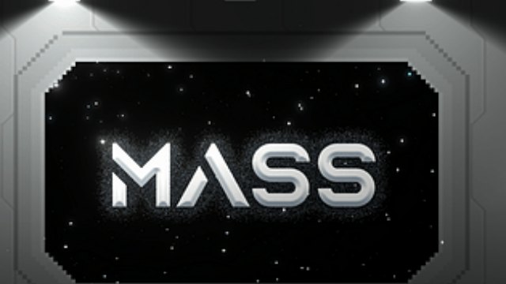
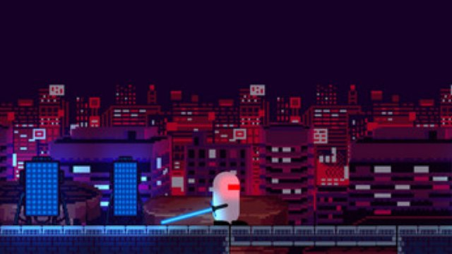
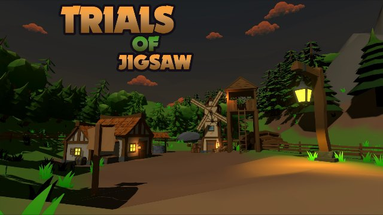

Games I've made with teams at game jams since 2022, each built from scratch around a theme in just a few days.
2022'den bu yana game jam'lerde takımlarla geliştirdiğim oyunlar; her biri bir tema etrafında birkaç gün içinde sıfırdan yapıldı.

MASS
HUJAM'22 · OTK teamHUJAM'22 · OTK takımı
🏆 2nd in originality · 5th of 67 games🏆 Özgünlükte 2. · 67 oyun arasında 5.
A space survival adventure: you must get home and send your message, and nothing should stop you. It held its place as the most popular game throughout the 24-hour jury evaluation.
Bir uzay hayatta kalma macerası: eve dönmeli ve mesajını göndermelisin, hiçbir şey seni durdurmamalı. 24 saatlik jüri değerlendirmesi boyunca en popüler oyun olarak yerini korudu.
Play on itch.io →itch.io'da oyna →

Time & Space Agent
HUJAM'23 · theme: futurism · 3 daysHUJAM'23 · tema: fütürizm · 3 gün
It's the year 3023 and you are Anon, a time and space agent. Your next operation is too hard to play straight, so you manipulate time to carve your own path to the end.
3023 yılında Anon adında bir Zaman&Uzay ajanısın. Bir sonraki operasyonunun getirdiği zorluklar dolayısıyla zamanı manipüle edip kendi yolunu kendin çizmen gerekiyor. Sona ulaş ve operasyonu tamamla.
Play on itch.io →itch.io'da oyna →

Trials of Jigsaw
MagaraJam'23 · OTK teamMagaraJam'23 · OTK takımı
On an ordinary day a meteor falls near your village. Set out to investigate it, test your existence and reach the final version of yourself.
Sıradan bir günde yaşadığın köyün yakınına gökten bir meteor düşüyor. Bu meteoru incelemek için çıktığın serüvende varlığını sına, benliğinin son versiyonuna ulaş.
Play on MagaraJam →MagaraJam'de oyna →